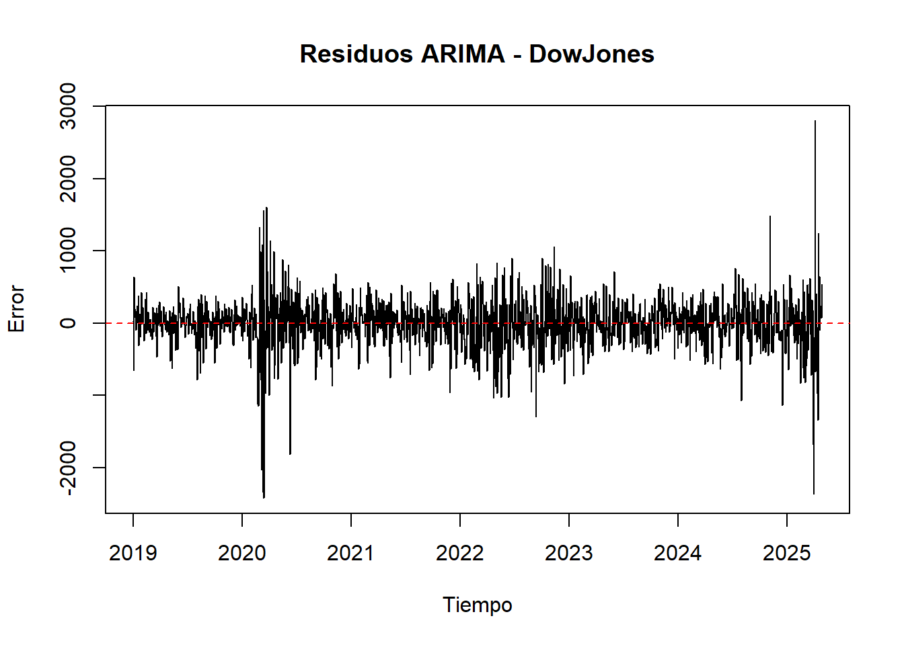

Chapter 5 Implementación de modelos.
5.1 Validación de los Modelos ARIMA: Diagnóstico de Residuos.
Una vez ajustados los modelos ARIMA para cada índice bursátil, realizamos un proceso riguroso de validación de residuos. Este paso es esencial para comprobar que los supuestos del modelo se cumplen, y por tanto, que los pronósticos generados por los modelos serán confiables.
1. Selección Automática del Modelo ARIMA. Utilizando la función auto.arima() de la librería forecast, se seleccionó automáticamente para cada serie el modelo ARIMA más adecuado, optimizando el criterio AIC. El modelo se representa como ARIMA(p,d,q), donde:
p: número de rezagos autorregresivos (AR),
d: orden de diferenciación aplicado,
q: número de rezagos en el error (MA).
Por ejemplo, el índice SP500 fue modelado con un ARIMA(2,1,2), lo que significa que se usaron dos términos autorregresivos, una diferenciación de orden 1, y dos componentes de media móvil.
2. Evaluación de la Normalidad de los Residuos
Se aplicó la prueba de Shapiro-Wilk para evaluar si los residuos del modelo seguían una distribución normal. La hipótesis nula de esta prueba es que los residuos son normales.
Criterio aplicado: Si el p-valor < 0.05, se rechaza la hipótesis de normalidad y se concluye que los residuos no son normales.
Resultados: En todos los índices, el p-valor fue 0, por lo tanto, ninguna serie presentó residuos normalmente distribuidos.
3. Evaluación de Independencia: Ruido Blanco. Se utilizó la prueba de Ljung-Box sobre los residuos de cada modelo, para detectar si existía autocorrelación significativa. Esta prueba evalúa si los residuos son ruido blanco, es decir, si son impredecibles y no muestran correlación entre ellos.
Criterio aplicado: Si el p-valor > 0.05, no se detecta autocorrelación, y se concluye que los residuos son ruido blanco.
5.2 Resumen por Índice Bursátil: Diagnóstico del Modelo ARIMA.
SP500.
Modelo ajustado: ARIMA(2,1,2) con término de deriva. Los residuos no son normales (p = 0), pero sí constituyen ruido blanco (p = 0.56727), lo cual indica un buen ajuste en términos de independencia temporal.
Dow Jones.
Modelo ajustado: ARIMA(2,1,2) con deriva. Los residuos no siguen distribución normal (p = 0), pero son independientes en el tiempo (p = 0.80404), lo que valida el modelo para fines de predicción.
Nasdaq.
Modelo ajustado: ARIMA(4,1,3) con deriva. Aunque los residuos no son normales (p = 0), presentan ruido blanco (p = 0.88196), lo cual respalda la validez del modelo ajustado.
DAX.
Modelo ajustado: ARIMA(4,0,3) con media diferente de cero. Los residuos no son normales (p = 0), pero no presentan autocorrelación significativa (p = 0.08595), por lo que se considera un modelo aceptable.
CAC40.
Modelo ajustado: ARIMA(0,1,0). Los residuos no son normales (p = 0) y sí presentan autocorrelación (p = 0.03156), lo que indica un modelo que no captura completamente la dinámica de la serie.
FTSE100.
Modelo ajustado: ARIMA(0,1,0). Los residuos no son normales (p = 0) y están autocorrelacionados (p = 0.00002), lo que sugiere que el modelo es insuficiente y podría mejorarse.
Nikkei225.
Modelo ajustado: ARIMA(1,1,2). A pesar de que los residuos no son normales (p = 0), sí son ruido blanco (p = 0.62166), lo que respalda su uso en pronósticos.
Hang Seng.
Modelo ajustado: ARIMA(0,1,0). Los residuos no son normales (p = 0), pero no presentan autocorrelación (p = 0.67402), lo cual valida el modelo.
Shanghai Composite. Modelo ajustado: ARIMA(0,1,0). A pesar de la no normalidad (p = 0), los residuos son ruido blanco (p = 0.39639), lo que indica que el modelo cumple con los supuestos básicos para predicción.
5.3 Implementación del modelo y validación de supuestos.
Para cada serie temporal, se ajustó un modelo ARIMA utilizando un proceso automatizado de selección de parámetros. Posteriormente, se evaluó la validez del modelo a través del análisis de los residuos generados. Este análisis incluyó la verificación de normalidad (mediante la prueba de Shapiro-Wilk) y la independencia temporal (usando la prueba de Ljung-Box). Los pasos fueron los siguientes:
1. Ajuste del modelo ARIMA automáticamente. Se utiliza un procedimiento automático (auto.arima) que busca el mejor modelo ARIMA para cada serie, sin considerar estacionalidad.
Este modelo se selecciona con base en criterios como el AIC (Criterio de Información de Akaike), garantizando un equilibrio entre precisión y simplicidad.
2. Evaluación de los residuos del modelo.
Una vez ajustado el modelo, se analizan sus residuos (errores de predicción) para verificar si cumple con los supuestos básicos de un buen modelo de series de tiempo:
a. Comprobación gráfica:
Se grafican los residuos a lo largo del tiempo para visualizar si hay patrones (no debería haberlos).
Se grafica también la ACF (Función de Autocorrelación) de los residuos para ver si hay dependencia entre errores (idealmente no debe haber).
b. Prueba de normalidad (Shapiro-Wilk):
Se verifica si los errores siguen una distribución normal.
Si el valor-p de esta prueba es menor a 0.05, se concluye que los errores no son normales.
Esto es importante porque la normalidad de los residuos ayuda a mejorar la interpretación y precisión de los intervalos de predicción.
c. Prueba de independencia o ruido blanco (Ljung-Box):
Se evalúa si los errores están autocorrelacionados o si son esencialmente aleatorios (ruido blanco).
Si el valor-p es mayor a 0.05, se interpreta que no hay autocorrelación, lo que es deseable en un buen modelo.
Code
# Creamos tabla resumen de los modelos y residuos
resumen_modelos <- data.frame(
Indice = character(),
Modelo = character(),
Normalidad = character(),
RuidoBlanco = character(),
stringsAsFactors = FALSE
)
# Función para ajustar ARIMA y evaluar residuos
evaluar_residuos_arima <- function(ts_final, nombre_indice) {
cat("\n\n=== Diagnóstico ARIMA -", nombre_indice, "===\n")
modelo <- auto.arima(ts_final, seasonal = FALSE)
cat("Modelo ajustado:", as.character(modelo), "\n")
residuos <- residuals(modelo)
# Gráfico de residuos
plot(residuos, main = paste("Residuos ARIMA -", nombre_indice), ylab = "Error", xlab = "Tiempo")
abline(h = 0, col = "red", lty = 2)
# ACF de residuos
acf(residuos, main = paste("ACF de Residuos -", nombre_indice))
# Prueba de normalidad (Shapiro-Wilk)
if (length(residuos) >= 3 & length(residuos) <= 5000) {
p_normal <- shapiro.test(residuos)$p.value
normalidad <- ifelse(p_normal < 0.05, "No normal", "Normal")
cat("p-valor Shapiro-Wilk:", round(p_normal, 5), "-", normalidad, "\n")
} else {
normalidad <- "No evaluada"
cat("Tamaño inadecuado para Shapiro-Wilk.\n")
}
# Prueba de independencia (Ljung-Box)
p_ljung <- Box.test(residuos, lag = 20, type = "Ljung-Box")$p.value
ruido <- ifelse(p_ljung < 0.05, "Autocorrelados", "Ruido blanco")
cat("p-valor Ljung-Box:", round(p_ljung, 5), "-", ruido, "\n")
# Guardamos el resultado en la tabla
resumen_modelos <<- rbind(resumen_modelos, data.frame(
Indice = nombre_indice,
Modelo = as.character(modelo),
Normalidad = normalidad,
RuidoBlanco = ruido
))
}Code
##
##
## === Diagnóstico ARIMA - SP500 ===
## Modelo ajustado: ARIMA(2,1,2) with drift## p-valor Shapiro-Wilk: 0 - No normal
## p-valor Ljung-Box: 0.56727 - Ruido blanco
##
##
## === Diagnóstico ARIMA - DowJones ===
## Modelo ajustado: ARIMA(2,1,2) with drift
## p-valor Shapiro-Wilk: 0 - No normal
## p-valor Ljung-Box: 0.80404 - Ruido blanco
##
##
## === Diagnóstico ARIMA - Nasdaq ===
## Modelo ajustado: ARIMA(4,1,3) with drift## p-valor Shapiro-Wilk: 0 - No normal
## p-valor Ljung-Box: 0.88196 - Ruido blanco
##
##
## === Diagnóstico ARIMA - DAX ===
## Modelo ajustado: ARIMA(4,0,3) with non-zero mean## p-valor Shapiro-Wilk: 0 - No normal
## p-valor Ljung-Box: 0.08595 - Ruido blanco
##
##
## === Diagnóstico ARIMA - CAC40 ===
## Modelo ajustado: ARIMA(0,1,0)

## p-valor Shapiro-Wilk: 0 - No normal
## p-valor Ljung-Box: 0.03156 - Autocorrelados
##
##
## === Diagnóstico ARIMA - FTSE100 ===
## Modelo ajustado: ARIMA(0,1,0)## p-valor Shapiro-Wilk: 0 - No normal
## p-valor Ljung-Box: 2e-05 - Autocorrelados
##
##
## === Diagnóstico ARIMA - Nikkei225 ===
## Modelo ajustado: ARIMA(1,1,2)## p-valor Shapiro-Wilk: 0 - No normal
## p-valor Ljung-Box: 0.62166 - Ruido blanco
##
##
## === Diagnóstico ARIMA - HangSeng ===
## Modelo ajustado: ARIMA(0,1,0)## p-valor Shapiro-Wilk: 0 - No normal
## p-valor Ljung-Box: 0.67402 - Ruido blanco
##
##
## === Diagnóstico ARIMA - ShanghaiComposite ===
## Modelo ajustado: ARIMA(0,1,0)## p-valor Shapiro-Wilk: 0 - No normal
## p-valor Ljung-Box: 0.39639 - Ruido blanco5.4 Tabla de resumen.
Code
| Indice | Modelo | Normalidad | RuidoBlanco |
|---|---|---|---|
| SP500 | ARIMA(2,1,2) with drift | No normal | Ruido blanco |
| DowJones | ARIMA(2,1,2) with drift | No normal | Ruido blanco |
| Nasdaq | ARIMA(4,1,3) with drift | No normal | Ruido blanco |
| DAX | ARIMA(4,0,3) with non-zero mean | No normal | Ruido blanco |
| CAC40 | ARIMA(0,1,0) | No normal | Autocorrelados |
| FTSE100 | ARIMA(0,1,0) | No normal | Autocorrelados |
| Nikkei225 | ARIMA(1,1,2) | No normal | Ruido blanco |
| HangSeng | ARIMA(0,1,0) | No normal | Ruido blanco |
| ShanghaiComposite | ARIMA(0,1,0) | No normal | Ruido blanco |